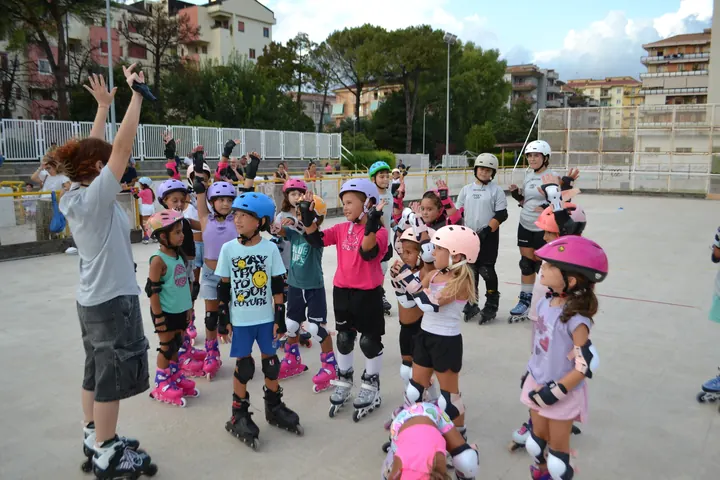

Riaprono i corsi di pattinaggio a rotelle per bambini a Pontecagnano: al via la stagione 2026/2027
Corsi di pattinaggio a rotelle per bambini dai 4 anni a Pontecagnano, vicino Salerno: corsa, artistico e hockey inline. Stagione 2026/2027, prova gratuita.